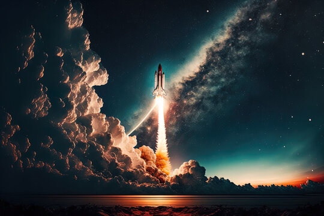

In the not-so-distant future, humanity embarked on an ambitious space mission to unravel the mysteries of the two small moons orbiting Mars: Phobos and Deimos. The mission was named the "Phobos-Deimos Explorer" (PDE) and had the primary objective of studying the origin, composition, and evolution of these Martian moons.
The PDE was a technological marvel, a highly specialized spacecraft equipped with advanced scientific instruments and a robust exploration robot named "PhobosBot." Designed to land and traverse the surfaces of Phobos and Deimos, the PhobosBot was equipped with drilling tools, high-resolution cameras, and sensors to analyze the terrain's composition.
The mission began with the launch of the PDE from Earth, aboard a powerful spacecraft propelled by ion propulsion technology. The PDE navigated through space for months, utilizing ion propulsion to adjust its trajectory and eventually reach the Martian system.
Once in Martian orbit, the PDE released the PhobosBot, which gently descended to the surface of Phobos within a protective capsule. After an exhilarating and successful landing, the PhobosBot began deploying its legs and sensors. Soon, it started sending high-definition images and scientific data back to Earth.
The PhobosBot ventured out to explore the rocky and fissured surface of Phobos, drilling samples of the soil and analyzing its composition. It discovered intriguing minerals and clues about the moon's geological history. Furthermore, it used its cameras to capture breathtaking panoramic views of Mars and the stars from the unique perspective of Phobos.
After completing its mission on Phobos, the PhobosBot prepared for the exciting journey to Deimos. It repositioned itself within the landing capsule and was launched toward the next moon. The landing on Deimos was equally successful, and the robot commenced its exploration on this smaller, more distant moon.
During its time on Deimos, the PhobosBot continued to collect samples, perform analyses, and send valuable data back to Earth. It discovered that Deimos had a distinct composition from Phobos and provided crucial insights into the formation of these moons and their relationship with Mars.

Following a successful mission on both moons, the PhobosBot finally reentered its return capsule and was launched back into Martian orbit. The PDE, carrying its precious cargo of data and samples, began the journey back to Earth, where scientists eagerly awaited the results of this unprecedented exploration.
The Phobos-Deimos Explorer mission left an indelible mark on the history of space exploration, expanding our understanding of Mars and its environment. Humanity had once again demonstrated its ability to overcome technical and scientific challenges, pushing the boundaries of deep space exploration and uncovering the hidden secrets of distant worlds.